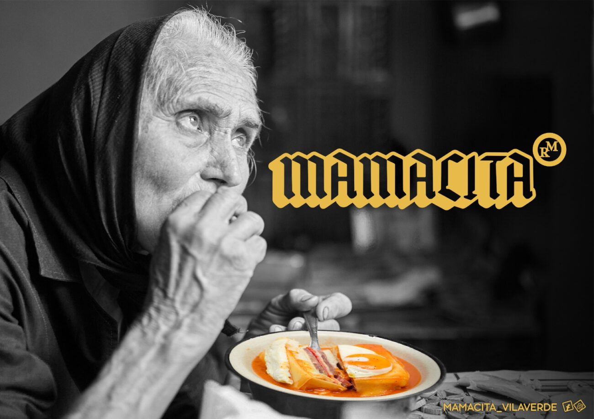

Terminal Coimbra
Terminal Coimbra |
Hamburgueria Artesanal localizada no centro da Vila. Além dos hambúrgueres também conta com uma vasta variedade de cervejas artesanais. |
| 
Mamacita |
Restaurante que recentemente abriu em Vila Verde. A especialidade é a francesinha. |
 McDonald's
McDonald's |
Restaurante da conhecida cadeia de fast-food McDonald's. |
 Cerveja Letra
Cerveja Letra |
Restaurante/Cervejaria famosa no concelho pelas suas cerveja artesanais e espaço acolhedor. |
| Praia Fluvial do Faial |
Praia localizada na Vila De Prado muito frequentada por locais e também turistas. |
| Praia Fluvial da Malheira |
Praia localizada em Vila Verde, com bons acessos e apoio de praia |
| Complexo de Lazer de Vila Verde |
As picinas municipais de Vila Verde têm exelentes condições, estando abertas desde as 10:00 até às 20:00 |